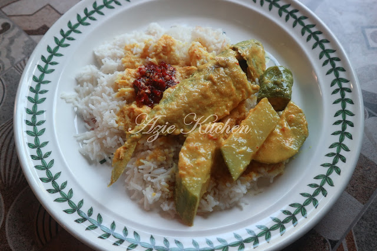
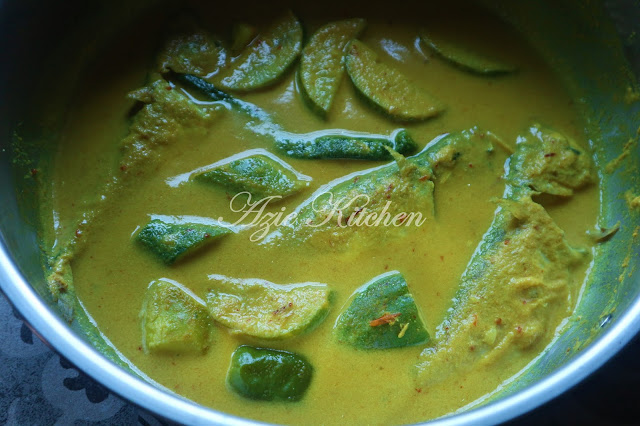
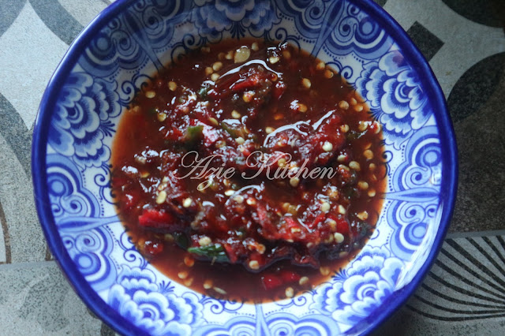

Bahan-bahan:
3-4 ekor ikan pelaling rebus
¼ kg santan segar
1 keping asam keping
Garam kasar
Gula
Serbuk perasa - opsyenal
Bahan kisar:
3 biji bawang merah
2 ulas bawang putih
½ sudu besar cili kering kisar - untuk kuah kemerahan sahaja
1 ½ inci lengkuas
1 ½ inci kunyit hidup
Bahan hiasan:
Timun/kacang panjang
Lada hijau - lada solok lagi sedap
Cili padi – jika suka
Cara-cara:
1.Ikan direbus (8 ekor) dengan 5 keping asam, 1 sudu besar garam dan sedikit cuka dengan air sekadar tenggelam ikan. Rebus sehingga air hampir kering. Ikan rebus mesti menpunyai rasa masam dan masin, baru lebih sedap.
2.Masak santan dan bahan kisar sehingga mendidih. Nota: boleh cairkan separuh santan dengan memasukkan air.
3.Perlu selalu dikacau bagi mengelakkan santan berketul atau di rumah kami, dipanggil gulai "beku".
4.Setelah mendidih, masukkan cili, timun, asam keping, garam dan gula. Biarkan mendidih lagi, masukkan ikan rebus.
5.Akhir sekali masukkan baki santan pekat dan kacau sehingga masak atas perlahan sehingga kelihatan sedikit terbit minyak di permukaan atas.

Nota;
Ikan rebus boleh dimasukkan bila nak dimakan supaya ianya tidak hancur seperti mana orang berniaga nasi berlauk.

Bahan-bahan:
3 tangkai cili kering - potong dan rebus
4-5 biji cili padi - potong kecil
1 biji buah limau nipis - perahan jus
1 - 1 ½ sudu besar gula
¼ sudu besar garam
¼ sudu besar belacan
Satukan semua bahan ke dalam blender dan kisar secara 'pulse' supaya ianya tidak terlalu hancur.
Sesuaikan rasa dan sedia untuk dihidangkan. Garam bergantung kepada belacan. Ada belacan yang masin, perlu kurangkan garam.
Credit: Azie Kitchen